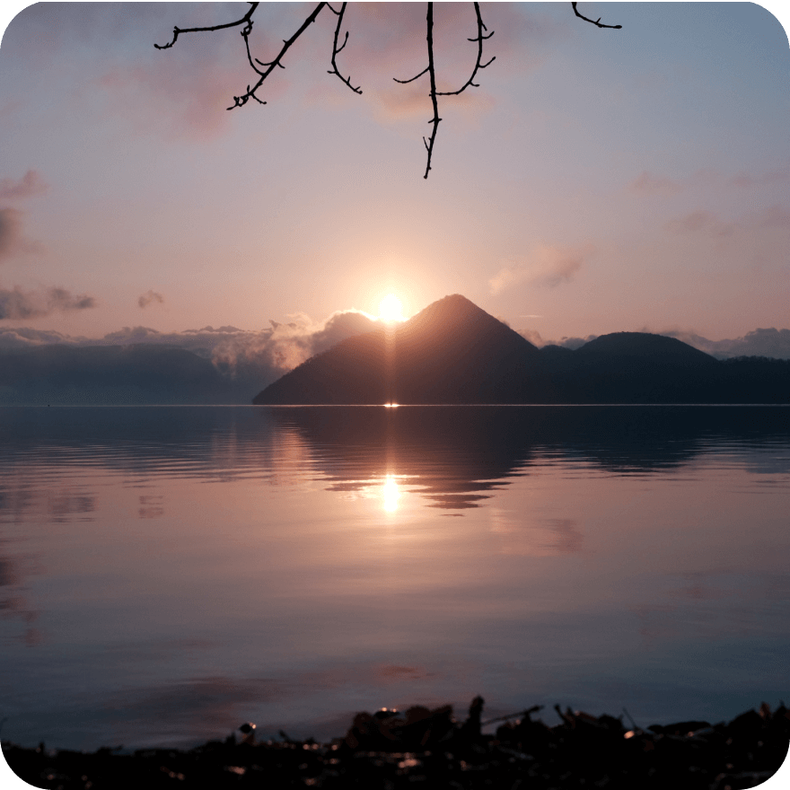
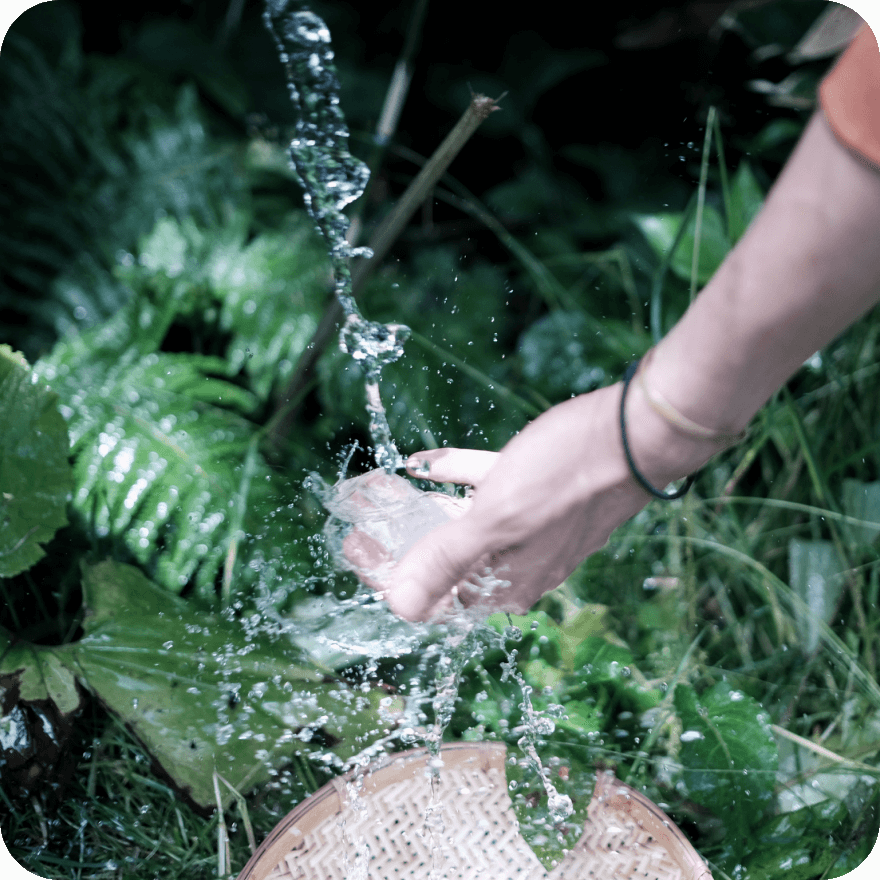
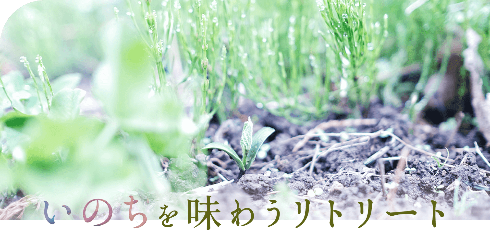
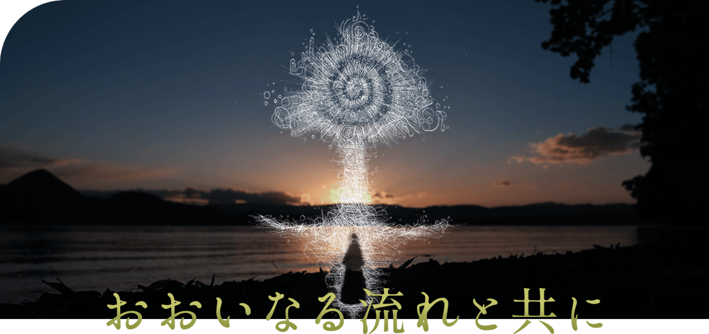
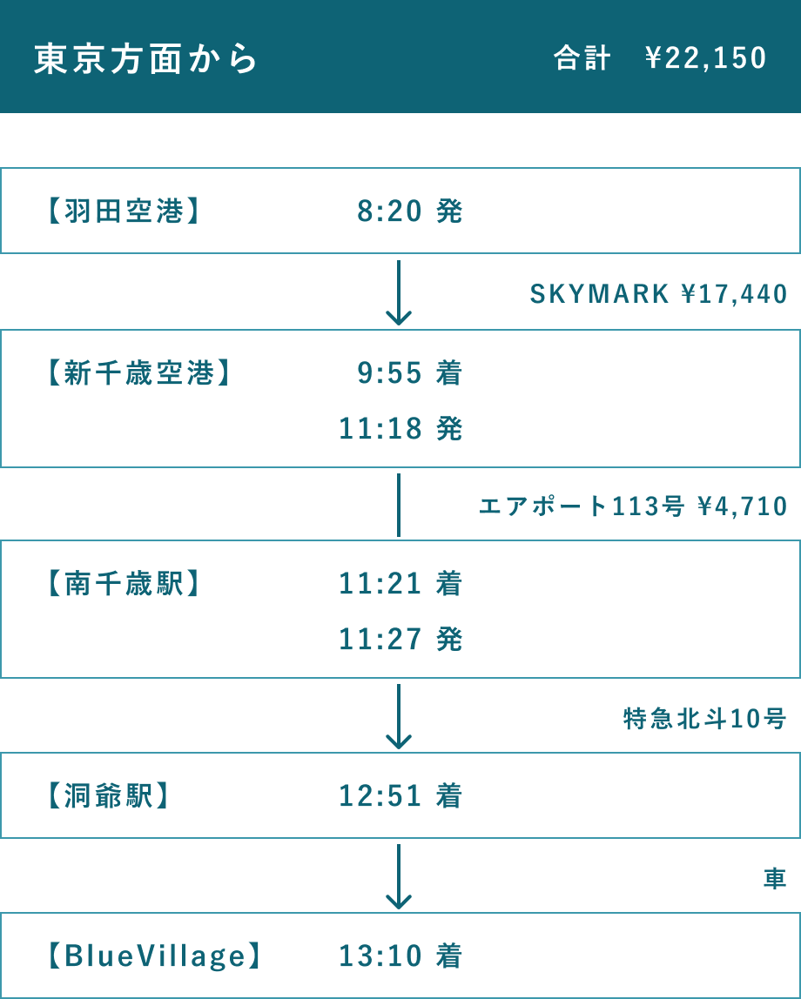
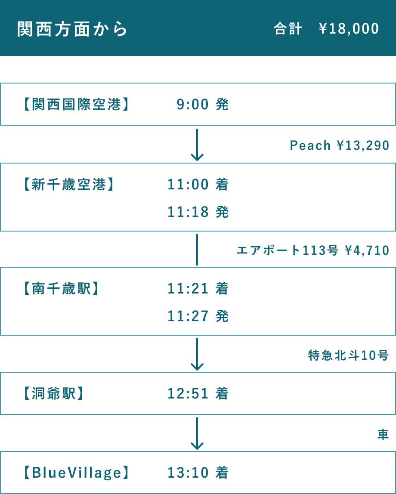
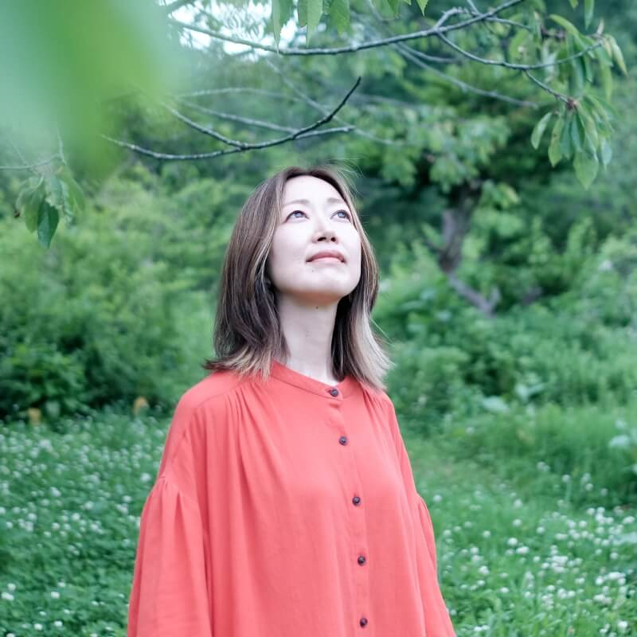
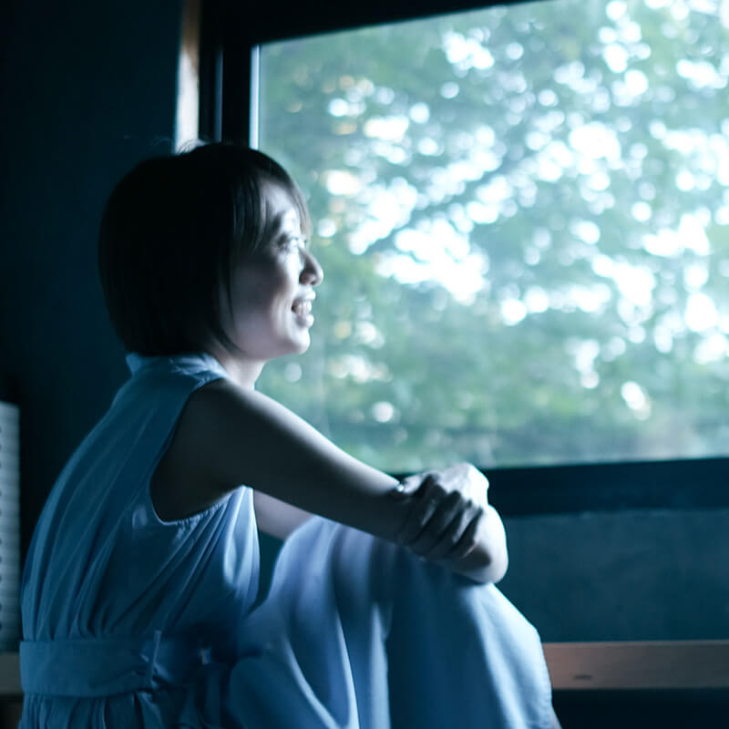

GWは洞爺湖畔の森で 2023.4.29(sat)-5.7(sun)
もっとも近い、だけど、
もっとも遠かった
「あなたの内側の世界」へ
旅する9日間
scroll
あなたが最後にあなた自身と
対話したのはいつですか。
気がつけば、聞こえていたはずの「自分の内側の声」が、聞こえなくなっていませんか。
今年のGWは、あなたの本当の声に耳を傾け、
失ってしまった「何か」を取り戻す特別な旅を企画しています。
前半は、食を通して"いのち"の感覚を取り戻す時間。
後半は、あなたの内なる声との対話の時間。
包まれるような安心感と心地よさの中で
あなたの感覚を、ひらいていく。
あなたのいのちの鼓動を感じていく。
聞こえなくなった「声」はなくなったわけではなく、
あなたの中にちゃんと"ある"ということを思い出していく。
そんな時間を過ごしてほしいと思っています。
一緒に人生を変える9日間を、春の北海道洞爺湖畔の森で過ごしませんか。
-
春にしか味わえない洞爺湖の魅力
ここは神秘的で美しい洞爺湖畔の森。
毎朝毎晩、太陽と月の光を反射する洞爺湖を臨み満点の星が降る夜に眠るとき、私たちが宇宙に生きていることを感じます。そして、5月初旬のゴールデンウィークの頃は、桜や梅が咲き、山菜や野草、木々の新芽もも一気に芽吹きはじめる、全てのいのちが「目覚める」季節。そんな"はじまりのエネルギー"をたっぷりと含んだ洞爺湖は、自分の中に眠った「何か」にアクセスするには絶好の季節。これこそが春にしか味わえないこの場所の魅力です。
近くには大地のエネルギーを感じる火山から湧き出る温泉、豊かな噴火湾の海の幸、自然や微生物の環境を大切にした農家さんたちが育てる特別なお野菜。北海道の春の美味しい味覚もたっぷりと楽しむことができます。
 -
大自然の中で、生まれ変わるような体験を
大自然の中で、湧水を飲み、動植物のうたを聴き、火を囲み、大地に眠る９日間は、全感覚が開かれてアップデートされるような、まるで自分が生まれ変わっていくような、そんな体験をして頂けると思います。
人によっては９日間は長いと感じるかもしれません。もちろん、前半だけ、後半だけの参加も可能です。
だけど、例えば海外へ行くような気持ちで9日間、このBlue Villageにきて頂けたら、もっとも近い、だけど、もっとも遠かった「あなたの内側の世界」へと深く深く入っていくような旅をすることができると思います。私たちは"あなたがじぶんと繋がる旅"の案内人として、あなたの参加を心よりお待ちしています。

\ GW前半は /
"食べること"を通してあなたの中にある
全てとのつながりを思い出す
2泊3日のリトリート

2023.4.29(sat) 14:00 - 5.1(mon) 15:30
「目の前のいのち」「自分自身のいのち」を 味わう体験は、
あなたの中にある全てとのつながりを思い出させてくれる
今回の食のリトリートは、自分自身、そして目の前のいのちと対峙し、触れ合い、
「食べること」を通してあなたの中にある全てとの「つながり」を思い出す2泊3日。
宇宙と、大自然と、自分自身と、そして全ての生き物との「境界」。
それをこの場のエネルギー、そしてリトリートの案内人のガイドによって外していきます。
きっと、見える世界が変わってしまう。
それは、生きる世界が変わるということです。
あなたは、あなたの目・意識でみた世界を生きることしかできないのだから。
今年の春。人生が変わってしまうような旅に、参加してみませんか？
もっと見る\ GW後半は /
内的世界を旅する3泊4日のリトリート

2023.5.3(wed) 14:00 - 5.6(sat) 15:30
太古から流れる一筋の風に触れ自然のリズムと調和した時、
呼び起こされる私自身の記憶。
命の声に耳を傾け、記憶の彼方から続く一筋の光を、呼び起こす森の中での3泊4日。
内なる世界への案内人が、森を舞台にインナージャーニーへと誘います。
普段生きている上で、閉じている感覚が開き、意識の範囲を拡張します。
私・あなた・世界。すべての巡りの中心に位置する、私という命。
その声に耳を澄まし、私という光が灯る場所を思い出す。そして、その光が照らす先へ。
私が何であったか、何者であったか。
世界とは、何だったか。
ご参加費
-
『いのちを味わうリトリート』2泊3日
のみご参加の場合通常 ¥88,000｜早割 ¥77,000
(3/21(火)まで) -
『おおいなる流れと共に』3泊4日
のみご参加の場合特別価格 ¥88,000 (通常価格¥120,000)
-
延泊1泊 ¥5,500
-
『GWは洞爺湖畔の森で』8泊9日
全日程ご参加の場合リトリート2つ ¥176,000 +
延泊2日 ¥11,000 = ¥187,000が特別価格 ¥165,000
BlueVillageまでのアクセス モデルケース
モデルコースは前泊利用の28日(金)ご出発の場合です。
GWは航空券の値上がりが予想されますが、前泊していただくと航空券がお得に購入して頂けておすすめです。
- 
- 
リトリート詳細
- 日程
- 2023年4月29日(土) 〜 5月7日(日)（8泊9日）
- 集合/解散場所
- JR洞爺駅 (新千歳空港より車で約2時間、特急電車で約1時間半) 電車でお越しの方は集合時は14:08着、解散時は15:30発をご予定ください。車での送迎をいたします。
- 参加費
- ¥165,000 表記価格は税込です。
- お申し込み締切
- 4/16(日)
- 定員
- 10名
- 含まれるもの
- 期間中の食事、温泉利用料金、移動費、キャンプ用品、写真・動画撮影
キャンプ用品は、テントや十分に温かい寝袋、マット、ライトなど、必要な器材の全てをこちらでご用意します。
全日程カメラマンが同行し、期間中の写真撮影、終了後の振り返り動画をご提供します。
- 持ち物
- 水筒、着替え、防寒着、雨靴、バスタオル、歯ブラシ、水着 東京での冬に近い環境です。ダウンやフリース、ヒートテックなどを必ずご持参ください。テントサウナをやる予定ですので、水着もしくは濡れても問題ない衣類のご用意もお願いいたします。
前泊または後泊する場合の追加料金は、1泊¥5,500(テント・寝袋、夜と朝の食事付き)です。
全編を通して、携帯電話やパソコンの利用ができません。緊急時の連絡先としてスタッフの連絡先をお伝えします。
メンバー
-

宇野 豪佑Hypno therapist
内的世界への案内人
Blue Villageの発起人。20代から人と自然が調和する暮らしの在り方やネイティブ・アメリカンやペルーのシャーマンが持つ、古代からの叡智の探求を続けている。北海道・洞爺湖畔の森に水が湧く土地との出会いをきっかけに、学んだ叡智を暮らしの中で実践する場としてBlue Villageを創り始める。シャーマニックな技法のひとつとして、ヒプノセラピーを学び資格を取得し、『内的世界への案内人』として【インナージャーニー旅行会社】を主宰し、インナージャーニープログラムの企画やセッションを行っている。
歌を歌い、言葉を綴り、絵を描く。様々な感覚を使って現れる彼の表現は、たくさんの人を目覚めさせる。そうして見つけた誰かの光を、暖かい眼差しで導き、新しい世界を見せてくれている。 -

中村 峻介Artist
目に見えない世界を彩り続ける
ペルーでのシャーマンのセレモニー、スウェーデンでのネイティブアメリカンの通過儀礼等の経験などを通し、深層心理、量子論、天文学、民俗学などに関心をもち、探求を続ける。それらを基に、時間や空間を超えるもの、意識と無意識、見えるものと見えざるものの『境界線』という、自己と他者を縁取るものや、世界で生じている曖昧かつ不可視な事象について、抽象絵画やワークショップ等といった多様なメディアを通して、アプローチをし続けている。また、豪佑と【インナージャーニー旅行会社】を共同主宰し、ヒプノセッションでたどり着いた無意識化でのビジョンを、目に見える絵という形で描いている。
誰かの内側の光を繊細に捉えて絵に描くことで、その人自身も気づいていない、その人の本来の光を見つけてくれる。彼の優しく繊細な感覚は、多くの人を惹きつけ、癒し続けている。 -

うのかなCosmic food creator
宇宙から微生物まで、「つながる」食の体験を。
東京から洞爺湖へ移住し、日々子育てと畑をしながら、Farm to Tableを楽しんでいる。そして、これまで感じていた「食べることで、過去や未来、他のいのちとつながる感覚」を、インスタレーションを通して体験する場を開いたり、YouTube【湖はんの森ぐらし。】では、BlueVillageでの暮らしや世界観を発信。主宰するオンラインサロン【湖はんの森の薬膳salon】では、薬膳をベースとした食の研究成果のレシピをオンラインレッスンで共有したり、知識を深めている。
彼女の作り出す世界観と、魔法のように生み出される豊かな食卓は、BlueVillageのメンバーはもちろん、ここを訪れる人たちを虜にし続けてる。 -

むらかみ よしみPhotographer/Designer
50年後、100年後もあってほしいと願う、想いをカタチに。
大学卒業後にアパレル販売員として働いていたが「本当にやりたい仕事とは？」という疑問を持ち、専門学校を経てクリエイターに転身。フリーランスとしてデザインを中心に、ディレクション、撮影など多方面で、様々なプロジェクトに関わる。BlueVillageではカメラを片手に、ここで起こるいろいろな事象を写真や動画として切り取り続けている。また、湧き上がるメンバーたちの想いを、ロゴやサイト、その他メディアなどのカタチにし、発信するサポートもしている。
彼女は世界の美しさを発見する目を持ち、そのまま収穫できる技術と、一度強く信じたらまっすぐ突き進む強さがある。たくさんの人の伴走者として、独特なクリエイターとして、今日も力強く走り続けている。 -

おおた さやこTwinkle recipient
関わる人・もの・ことの光を見つめる
札幌生まれ。美大卒業後、東京でアクセサリーやインテリアデザイン、ブランディングの仕事に携わる。2017年に札幌に帰郷し、企業にてバイヤーやプランナーとして働く中、自分の内側と繋がる生き方をしたいと感じるようになる。子育てが落ち着き始めた昨年より洞爺湖と札幌の二拠点生活を始め、BlueVillageの仲間と出会い、ジョイン。つくること、遊ぶこと、祈り、宇宙や水、光と色に惹かれ、日々魅了されている。人や、様々なものの内外にある光を見つめ、受け取ることが得意。
彼女と話すことで、人は、世界はとても素直で喜びに溢れていることに気づくことができる。